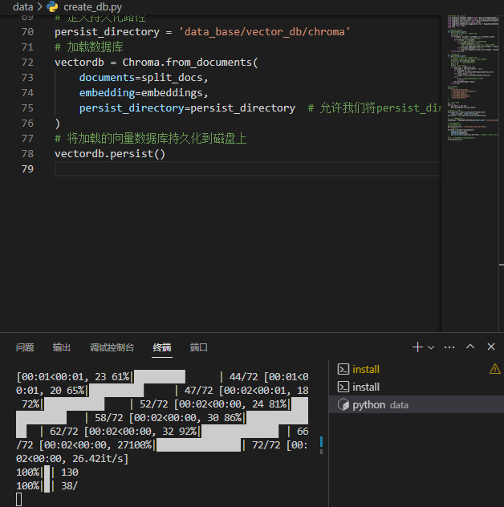

基于 InternLM 和 LangChain 搭建你的知识库
1 环境配置
1.1 InternLM 模型部署
# 升级pip
python -m pip install --upgrade pip
pip install modelscope==1.9.5
pip install transformers==4.35.2
pip install streamlit==1.24.0
pip install sentencepiece==0.1.99
pip install accelerate==0.24.1
1.2 模型下载
在本地的 /root/share/temp/model_repos/internlm-chat-7b 目录下已存储有所需的模型文件参数，可以直接拷贝到个人目录的模型保存地址：
mkdir -p /root/data/model/Shanghai_AI_Laboratory
cp -r /root/share/temp/model_repos/internlm-chat-7b /root/data/model/Shanghai_AI_Laboratory/internlm-chat-7b
1.3 LangChain 相关环境配置
在已完成 InternLM 的部署基础上，还需要安装以下依赖包：
pip install langchain==0.0.292
pip install gradio==4.4.0
pip install chromadb==0.4.15
pip install sentence-transformers==2.2.2
pip install unstructured==0.10.30
pip install markdown==3.3.7
同时，我们需要使用到开源词向量模型 Sentence Transformer:（我们也可以选用别的开源词向量模型来进行 Embedding，目前选用这个模型是相对轻量、支持中文且效果较好的，同学们可以自由尝试别的开源词向量模型）
首先需要使用 huggingface 官方提供的 huggingface-cli 命令行工具。安装依赖:
pip install -U huggingface_hub
然后在和 /root/data 目录下新建python文件 download_hf.py，填入以下代码：
- resume-download：断点续下
- local-dir：本地存储路径。（linux环境下需要填写绝对路径）
import os
# 下载模型
os.system('huggingface-cli download --resume-download sentence-transformers/paraphrase-multilingual-MiniLM-L12-v2 --local-dir /root/data/model/sentence-transformer')
但是，使用 huggingface 下载可能速度较慢，我们可以使用 huggingface 镜像下载。与使用hugginge face下载相同，只需要填入镜像地址即可。
将 download_hf.py 中的代码修改为以下代码：
import os
# 设置环境变量
os.environ['HF_ENDPOINT'] = 'https://hf-mirror.com'
# 下载模型
os.system('huggingface-cli download --resume-download sentence-transformers/paraphrase-multilingual-MiniLM-L12-v2 --local-dir /root/data/model/sentence-transformer')
然后，在 /root/data 目录下执行该脚本即可自动开始下载：
python download_hf.py
更多关于镜像使用可以移步至 HF Mirror 查看。
1.4 下载 NLTK 相关资源
我们在使用开源词向量模型构建开源词向量的时候，需要用到第三方库 nltk 的一些资源。正常情况下，其会自动从互联网上下载，但可能由于网络原因会导致下载中断，此处我们可以从国内仓库镜像地址下载相关资源，保存到服务器上。
我们用以下命令下载 nltk 资源并解压到服务器上：
cd /root
git clone https://gitee.com/yzy0612/nltk_data.git --branch gh-pages
cd nltk_data
mv packages/* ./
cd tokenizers
unzip punkt.zip
cd ../taggers
unzip averaged_perceptron_tagger.zip
之后使用时服务器即会自动使用已有资源，无需再次下载。
1.5 下载本项目代码
我们在仓库中同步提供了所有脚本，可以查看该教程文件的同级目录的 demo 文件夹。
建议通过以下目录将仓库 clone 到本地，可以直接在本地运行相关代码：
cd /root/data
git clone https://github.com/InternLM/tutorial
通过上述命令，可以将本仓库 clone 到本地 root/data/tutorial 目录下，在之后的过程中可以对照仓库中的脚本来完成自己的代码，也可以直接使用仓库中的脚本。
2 知识库搭建
2.1 数据收集
我们选择由上海人工智能实验室开源的一系列大模型工具开源仓库作为语料库来源，包括：
# 进入到数据库盘
cd /root/data
# clone 上述开源仓库
git clone https://gitee.com/open-compass/opencompass.git
git clone https://gitee.com/InternLM/lmdeploy.git
git clone https://gitee.com/InternLM/xtuner.git
git clone https://gitee.com/InternLM/InternLM-XComposer.git
git clone https://gitee.com/InternLM/lagent.git
git clone https://gitee.com/InternLM/InternLM.git
接着，为语料处理方便，我们将选用上述仓库中所有的 markdown、txt 文件作为示例语料库。注意，也可以选用其中的代码文件加入到知识库中，但需要针对代码文件格式进行额外处理（因为代码文件对逻辑联系要求较高，且规范性较强，在分割时最好基于代码模块进行分割再加入向量数据库）。
我们首先将上述仓库中所有满足条件的文件路径找出来，我们定义一个函数，该函数将递归指定文件夹路径，返回其中所有满足条件（即后缀名为 .md 或者 .txt 的文件）的文件路径：
import os
def get_files(dir_path):
# args：dir_path，目标文件夹路径
file_list = []
for filepath, dirnames, filenames in os.walk(dir_path):
# os.walk 函数将递归遍历指定文件夹
for filename in filenames:
# 通过后缀名判断文件类型是否满足要求
if filename.endswith(".md"):
# 如果满足要求，将其绝对路径加入到结果列表
file_list.append(os.path.join(filepath, filename))
elif filename.endswith(".txt"):
file_list.append(os.path.join(filepath, filename))
return file_list
2.2 加载数据
得到所有目标文件路径之后，我们可以使用 LangChain 提供的 FileLoader 对象来加载目标文件，得到由目标文件解析出的纯文本内容。由于不同类型的文件需要对应不同的 FileLoader，我们判断目标文件类型，并针对性调用对应类型的 FileLoader，同时，调用 FileLoader 对象的 load 方法来得到加载之后的纯文本对象：
from tqdm import tqdm
from langchain.document_loaders import UnstructuredFileLoader
from langchain.document_loaders import UnstructuredMarkdownLoader
def get_text(dir_path):
# args：dir_path，目标文件夹路径
# 首先调用上文定义的函数得到目标文件路径列表
file_lst = get_files(dir_path)
# docs 存放加载之后的纯文本对象
docs = []
# 遍历所有目标文件
for one_file in tqdm(file_lst):
file_type = one_file.split('.')[-1]
if file_type == 'md':
loader = UnstructuredMarkdownLoader(one_file)
elif file_type == 'txt':
loader = UnstructuredFileLoader(one_file)
else:
# 如果是不符合条件的文件，直接跳过
continue
docs.extend(loader.load())
return docs
使用上文函数，我们得到的 docs 为一个纯文本对象对应的列表。
2.3 构建向量数据库
得到该列表之后，我们就可以将它引入到 LangChain 框架中构建向量数据库。由纯文本对象构建向量数据库，我们需要先对文本进行分块，接着对文本块进行向量化。
LangChain 提供了多种文本分块工具，此处我们使用字符串递归分割器，并选择分块大小为 500，块重叠长度为 150
from langchain.text_splitter import RecursiveCharacterTextSplitter
text_splitter = RecursiveCharacterTextSplitter(
chunk_size=500, chunk_overlap=150)
split_docs = text_splitter.split_documents(docs)
接着我们选用开源词向量模型 Sentence Transformer 来进行文本向量化。LangChain 提供了直接引入 HuggingFace 开源社区中的模型进行向量化的接口：
from langchain.embeddings.huggingface import HuggingFaceEmbeddings
embeddings = HuggingFaceEmbeddings(model_name="/root/data/model/sentence-transformer")
同时，考虑到 Chroma 是目前最常用的入门数据库，我们选择 Chroma 作为向量数据库，基于上文分块后的文档以及加载的开源向量化模型，将语料加载到指定路径下的向量数据库：
from langchain.vectorstores import Chroma
# 定义持久化路径
persist_directory = 'data_base/vector_db/chroma'
# 加载数据库
vectordb = Chroma.from_documents(
documents=split_docs,
embedding=embeddings,
persist_directory=persist_directory # 允许我们将persist_directory目录保存到磁盘上
)
# 将加载的向量数据库持久化到磁盘上
vectordb.persist()
3 InternLM 接入 LangChain
为便捷构建 LLM 应用，我们需要基于本地部署的 InternLM，继承 LangChain 的 LLM 类自定义一个 InternLM LLM 子类，从而实现将 InternLM 接入到 LangChain 框架中。完成 LangChain 的自定义 LLM 子类之后，可以以完全一致的方式调用 LangChain 的接口，而无需考虑底层模型调用的不一致。
基于本地部署的 InternLM 自定义 LLM 类并不复杂，我们只需从 LangChain.llms.base.LLM 类继承一个子类，并重写构造函数与 _call 函数即可：
from langchain.llms.base import LLM
from typing import Any, List, Optional
from langchain.callbacks.manager import CallbackManagerForLLMRun
from transformers import AutoTokenizer, AutoModelForCausalLM
import torch
class InternLM_LLM(LLM):
# 基于本地 InternLM 自定义 LLM 类
tokenizer : AutoTokenizer = None
model: AutoModelForCausalLM = None
def __init__(self, model_path :str):
# model_path: InternLM 模型路径
# 从本地初始化模型
super().__init__()
print("正在从本地加载模型...")
self.tokenizer = AutoTokenizer.from_pretrained(model_path, trust_remote_code=True)
self.model = AutoModelForCausalLM.from_pretrained(model_path, trust_remote_code=True).to(torch.bfloat16).cuda()
self.model = self.model.eval()
print("完成本地模型的加载")
def _call(self, prompt : str, stop: Optional[List[str]] = None,
run_manager: Optional[CallbackManagerForLLMRun] = None,
**kwargs: Any):
# 重写调用函数
system_prompt = """You are an AI assistant whose name is InternLM (书生·浦语).
- InternLM (书生·浦语) is a conversational language model that is developed by Shanghai AI Laboratory (上海人工智能实验室). It is designed to be helpful, honest, and harmless.
- InternLM (书生·浦语) can understand and communicate fluently in the language chosen by the user such as English and 中文.
"""
messages = [(system_prompt, '')]
response, history = self.model.chat(self.tokenizer, prompt , history=messages)
return response
@property
def _llm_type(self) -> str:
return "InternLM"
在上述类定义中，我们分别重写了构造函数和 _call 函数：对于构造函数，我们在对象实例化的一开始加载本地部署的 InternLM 模型，从而避免每一次调用都需要重新加载模型带来的时间过长；_call 函数是 LLM 类的核心函数，LangChain 会调用该函数来调用 LLM，在该函数中，我们调用已实例化模型的 chat 方法，从而实现对模型的调用并返回调用结果。
在整体项目中，我们将上述代码封装为 LLM.py，后续将直接从该文件中引入自定义的 LLM 类。
4 构建检索问答链
调用一个 LangChain 提供的 RetrievalQA 对象，通过初始化时填入已构建的数据库和自定义 LLM 作为参数，来简便地完成检索增强问答的全流程，LangChain 会自动完成基于用户提问进行检索、获取相关文档、拼接为合适的 Prompt 并交给 LLM 问答的全部流程。
4.1 加载向量数据库
首先我们需要将上文构建的向量数据库导入进来，我们可以直接通过 Chroma 以及上文定义的词向量模型来加载已构建的数据库：
from langchain.vectorstores import Chroma
from langchain.embeddings.huggingface import HuggingFaceEmbeddings
import os
# 定义 Embeddings
embeddings = HuggingFaceEmbeddings(model_name="/root/data/model/sentence-transformer")
# 向量数据库持久化路径
persist_directory = 'data_base/vector_db/chroma'
# 加载数据库
vectordb = Chroma(
persist_directory=persist_directory,
embedding_function=embeddings
)
上述代码得到的 vectordb 对象即为我们已构建的向量数据库对象，该对象可以针对用户的 query 进行语义向量检索，得到与用户提问相关的知识片段。
4.2 实例化自定义 LLM 与 Prompt Template
接着，我们实例化一个基于 InternLM 自定义的 LLM 对象：
from LLM import InternLM_LLM
llm = InternLM_LLM(model_path = "/root/data/model/Shanghai_AI_Laboratory/internlm-chat-7b")
llm.predict("你是谁")
构建检索问答链，还需要构建一个 Prompt Template，该 Template 其实基于一个带变量的字符串，在检索之后，LangChain 会将检索到的相关文档片段填入到 Template 的变量中，从而实现带知识的 Prompt 构建。我们可以基于 LangChain 的 Template 基类来实例化这样一个 Template 对象：
from langchain.prompts import PromptTemplate
# 我们所构造的 Prompt 模板
template = """使用以下上下文来回答用户的问题。如果你不知道答案，就说你不知道。总是使用中文回答。
问题: {question}
可参考的上下文：
···
{context}
···
如果给定的上下文无法让你做出回答，请回答你不知道。
有用的回答:"""
# 调用 LangChain 的方法来实例化一个 Template 对象，该对象包含了 context 和 question 两个变量，在实际调用时，这两个变量会被检索到的文档片段和用户提问填充
QA_CHAIN_PROMPT = PromptTemplate(input_variables=["context","question"],template=template)
4.3 构建检索问答链
最后，可以调用 LangChain 提供的检索问答链构造函数，基于我们的自定义 LLM、Prompt Template 和向量知识库来构建一个基于 InternLM 的检索问答链：
from langchain.chains import RetrievalQA
qa_chain = RetrievalQA.from_chain_type(llm,retriever=vectordb.as_retriever(),return_source_documents=True,chain_type_kwargs={"prompt":QA_CHAIN_PROMPT})
得到的 qa_chain 对象即可以实现我们的核心功能，即基于 InternLM 模型的专业知识库助手。我们可以对比该检索问答链和纯 LLM 的问答效果：
# 检索问答链回答效果
question = "什么是InternLM"
result = qa_chain({"query": question})
print("检索问答链回答 question 的结果：")
print(result["result"])
# 仅 LLM 回答效果
result_2 = llm(question)
print("大模型回答 question 的结果：")
print(result_2)
5 部署 Web Demo
在完成上述核心功能后，我们可以基于 Gradio 框架将其部署到 Web 网页，从而搭建一个小型 Demo，便于测试与使用。
我们首先将上文的代码内容封装为一个返回构建的检索问答链对象的函数，并在启动 Gradio 的第一时间调用该函数得到检索问答链对象，后续直接使用该对象进行问答对话，从而避免重复加载模型：
from langchain.vectorstores import Chroma
from langchain.embeddings.huggingface import HuggingFaceEmbeddings
import os
from LLM import InternLM_LLM
from langchain.prompts import PromptTemplate
from langchain.chains import RetrievalQA
def load_chain():
# 加载问答链
# 定义 Embeddings
embeddings = HuggingFaceEmbeddings(model_name="/root/data/model/sentence-transformer")
# 向量数据库持久化路径
persist_directory = 'data_base/vector_db/chroma'
# 加载数据库
vectordb = Chroma(
persist_directory=persist_directory, # 允许我们将persist_directory目录保存到磁盘上
embedding_function=embeddings
)
# 加载自定义 LLM
llm = InternLM_LLM(model_path = "/root/data/model/Shanghai_AI_Laboratory/internlm-chat-7b")
# 定义一个 Prompt Template
template = """使用以下上下文来回答最后的问题。如果你不知道答案，就说你不知道，不要试图编造答
案。尽量使答案简明扼要。总是在回答的最后说“谢谢你的提问！”。
{context}
问题: {question}
有用的回答:"""
QA_CHAIN_PROMPT = PromptTemplate(input_variables=["context","question"],template=template)
# 运行 chain
qa_chain = RetrievalQA.from_chain_type(llm,retriever=vectordb.as_retriever(),return_source_documents=True,chain_type_kwargs={"prompt":QA_CHAIN_PROMPT})
return qa_chain
接着我们定义一个类，该类负责加载并存储检索问答链，并响应 Web 界面里调用检索问答链进行回答的动作：
class Model_center():
"""
存储检索问答链的对象
"""
def __init__(self):
# 构造函数，加载检索问答链
self.chain = load_chain()
def qa_chain_self_answer(self, question: str, chat_history: list = []):
"""
调用问答链进行回答
"""
if question == None or len(question) < 1:
return "", chat_history
try:
chat_history.append(
(question, self.chain({"query": question})["result"]))
# 将问答结果直接附加到问答历史中，Gradio 会将其展示出来
return "", chat_history
except Exception as e:
return e, chat_history
然后我们只需按照 Gradio 的框架使用方法，实例化一个 Web 界面并将点击动作绑定到上述类的回答方法即可：
通过将上述代码封装为 run_gradio.py 脚本，直接通过 python 命令运行，即可在本地启动知识库助手的 Web Demo，默认会在 7860 端口运行，接下来将服务器端口映射到本地端口即可访问:
在本地终端输入以下指令.7860是在服务器中打开的端口，而33090是根据开发机的端口进行更改。如下图所示：
ssh -CNg -L 7860:127.0.0.1:7860 root@ssh.intern-ai.org.cn -p 33090
6 作业
提交方式：在各个班级对应的 GitHub Discussion 帖子中进行提交。
基础作业：
复现课程知识库助手搭建过程
1、构建向量数据库

2、qa链

3、回答

4、web

进阶作业：
选择一个垂直领域，收集该领域的专业资料构建专业知识库，并搭建专业问答助手，并在 OpenXLab 上成功部署（截图，并提供应用地址）